社团徽章、吉祥物与社团印章
BADGE · MASCOT · STAMP
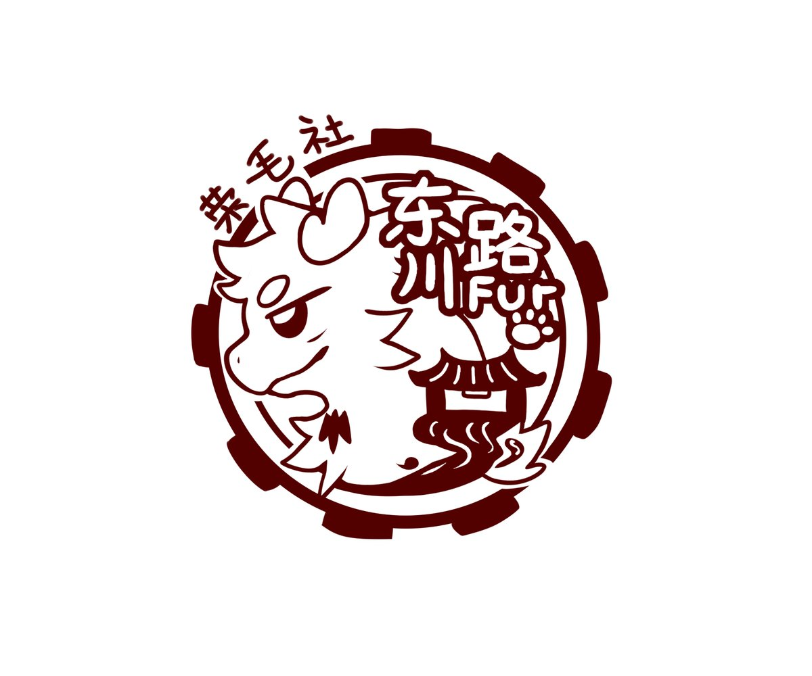
社团徽章
查看设计老师账号: 店长由店长老师设计的社团徽章，采用交大红的单色线条风格。圆环中的蛟澜探出半个身体，龙角、飞扬的鬃毛和自信的神情，表达成员勇于展现自我、拥抱多元的开放精神。
蛟澜身后的齿轮外轮廓代表“实业救国、工科强国”的严谨精神；齿轮内部融入交大标志性的东大门（庙门）与水波纹，连接校园历史、人文气息和“蛟龙得水”的意象。
左上角的“荣毛社”既呼应校训“爱国荣校”的“荣”字，也带着亲切幽默的社群表达。社团徽章 是社团的视觉识别，也是一份欢迎所有热爱 Furry 文化的交大学子加入的邀请。
吉祥物：蛟澜
查看设计老师账号: 沙棘由cyaneko（苍棂/沙棘）老师精心设计的上海交通大学小动物的专属吉祥物——蛟澜。他将会代表我们交大小动物用作宣传和社团活动的形象代言。
蛟澜是上海交通大学小动物社群的专属吉祥物。它是一条开朗、好奇、热爱探索的小龙，背着装满宝贝的背包，在校园里到处发现新鲜事。
“蛟”取自《说苑》中“蛟龙得水而后立其神”，象征交大学子厚积薄发、勇于向上的力量；“澜”指水面的大波浪，呼应上海临江达海的地域气质，也寓意“敢为天下先”的创新精神。愿群友能如激流勇进，在各个领域掀起浪潮。
蛟澜背包上的白玉兰来自上海市花。它既是家乡的珍贵礼物，也是蛟澜一直带在身边的守护符号。
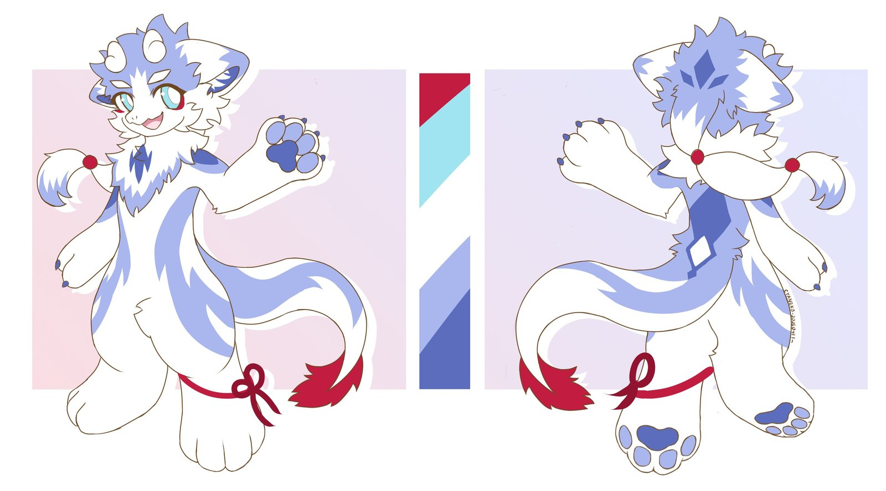
表情包
让蛟澜出现在日常对话和活动协作里。
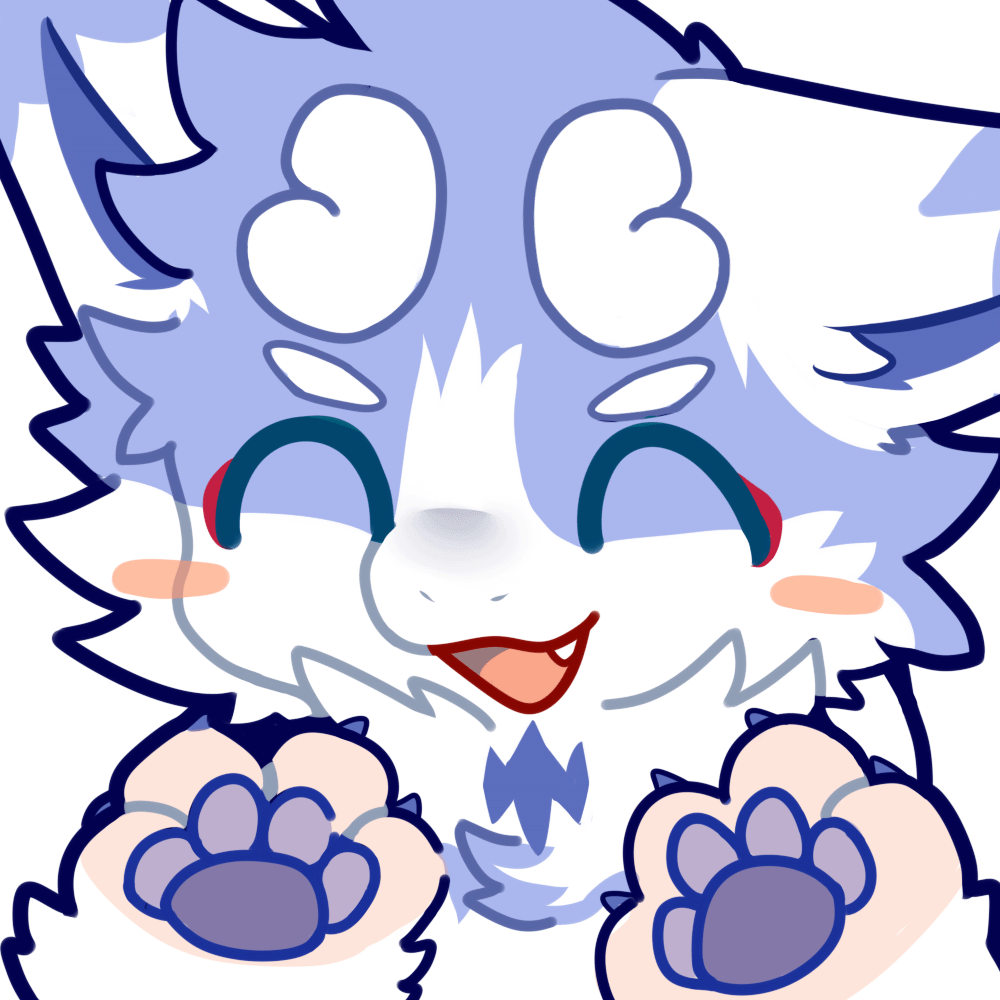
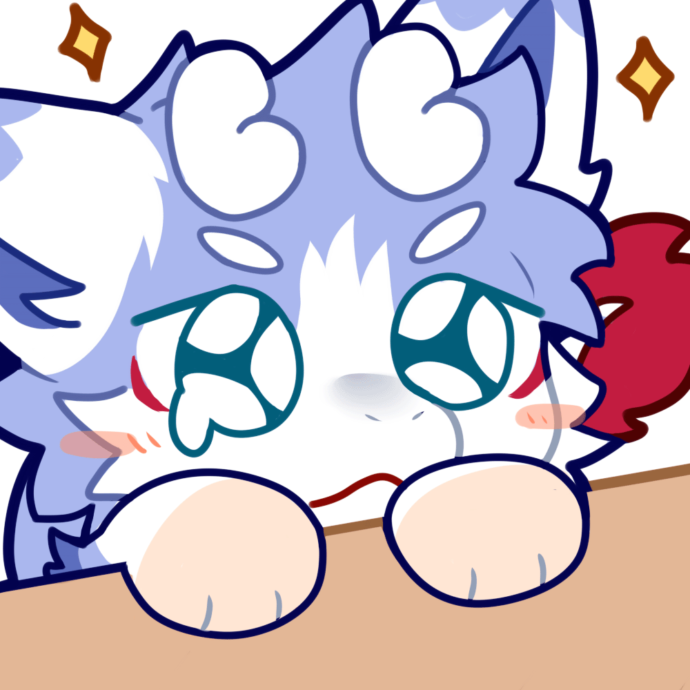
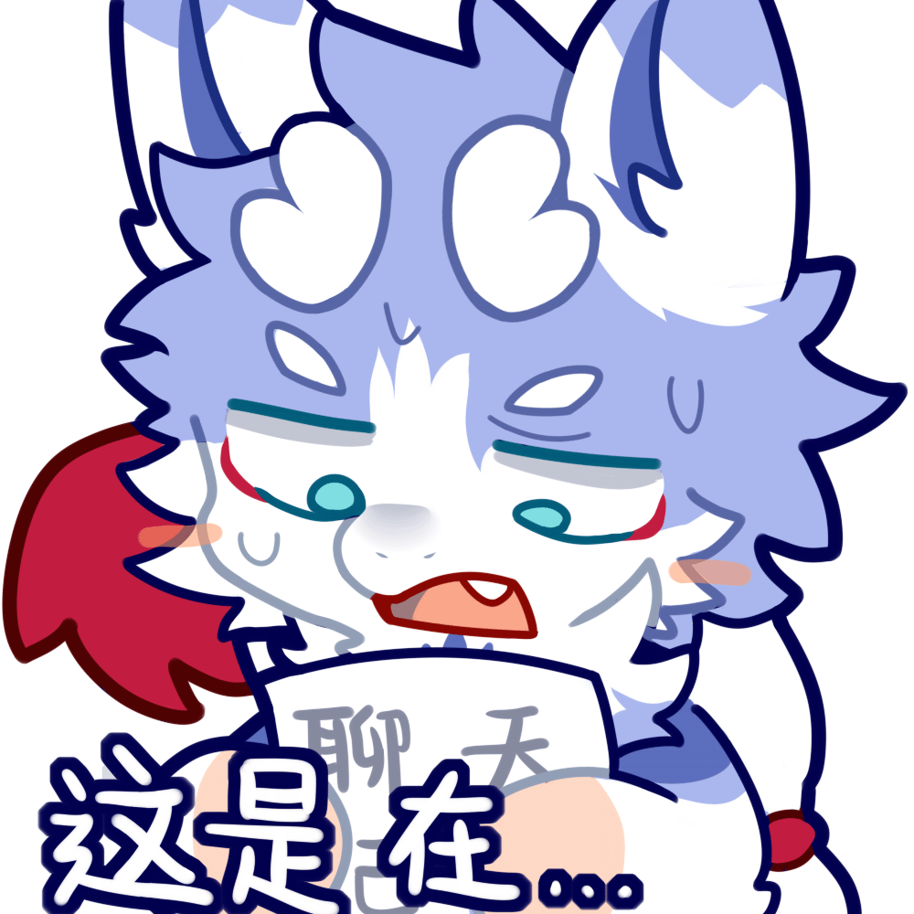
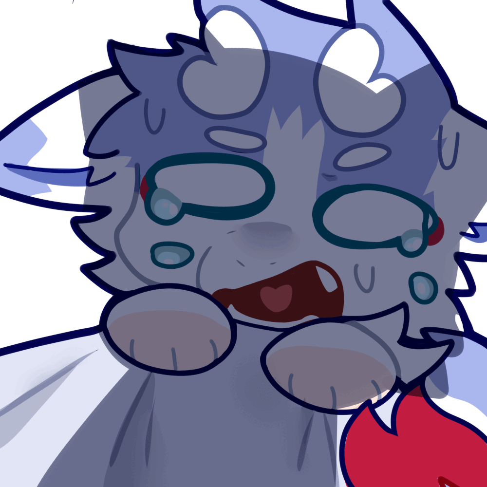
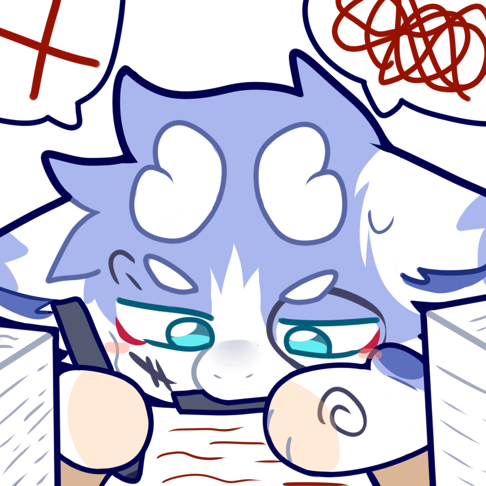
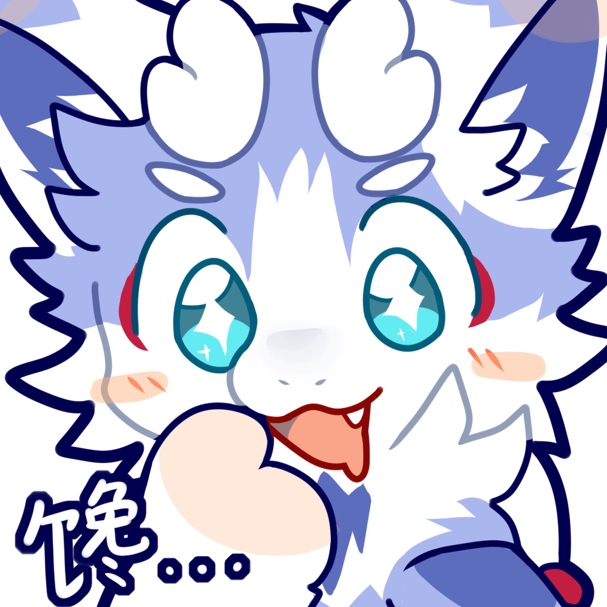
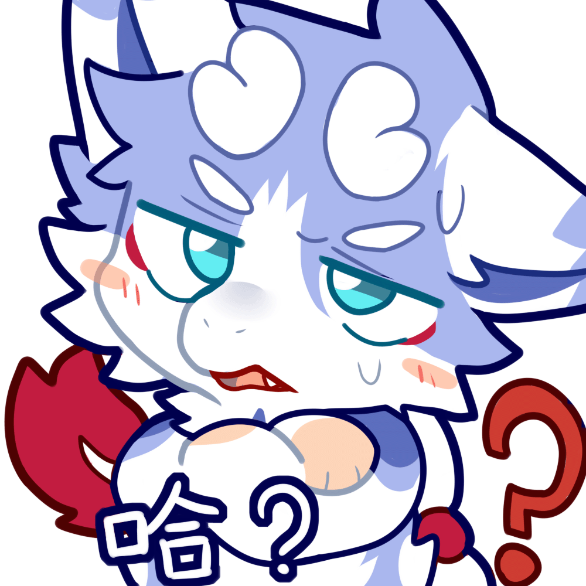
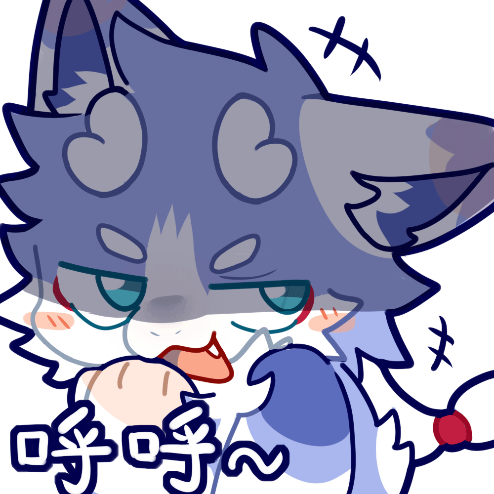
社团印章
查看设计老师账号: 瑞皮由瑞皮老师设计的社团印章
社团印章在社团徽章 的基础上进行圆形徽章化设计：蛟澜端坐中央，双手举起爪子，身体稳稳托住交大东大门；环绕底部的“东川路 800 号荣毛社”标明了社团所在的校园坐标。
印章用于社团实体周边、活动纪念盖章，以及需要强化归属感的线下场景。它与 社团徽章一脉相承，构成属于交大 Furry 同好的专属印记。
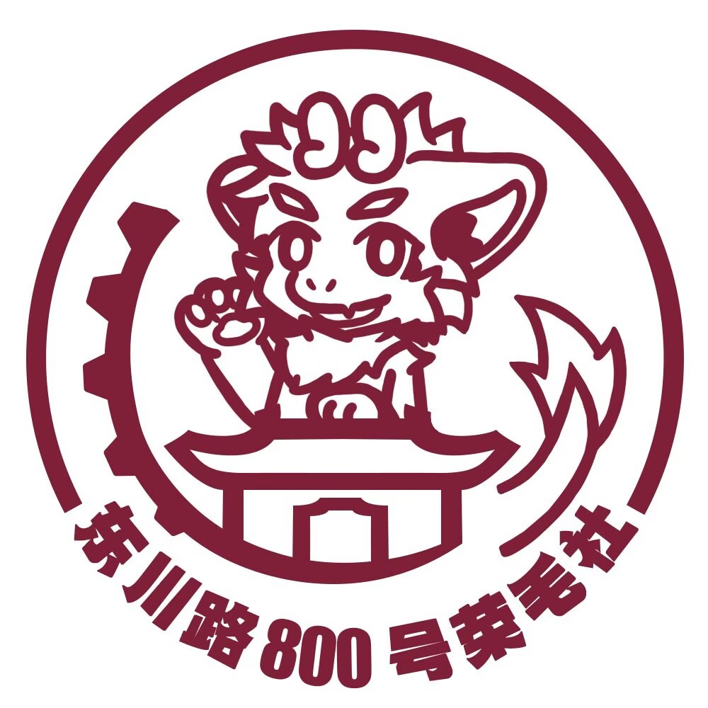